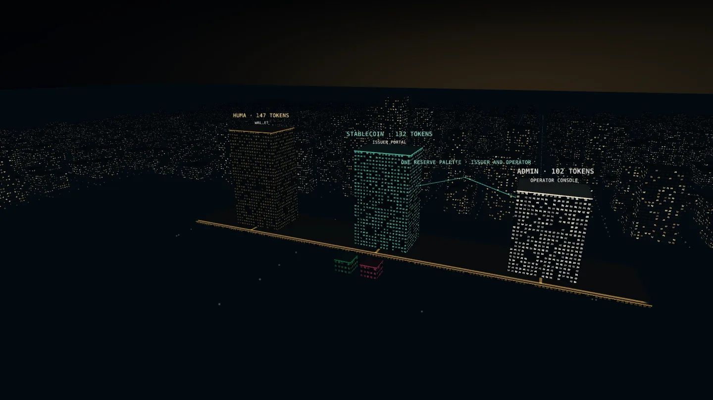
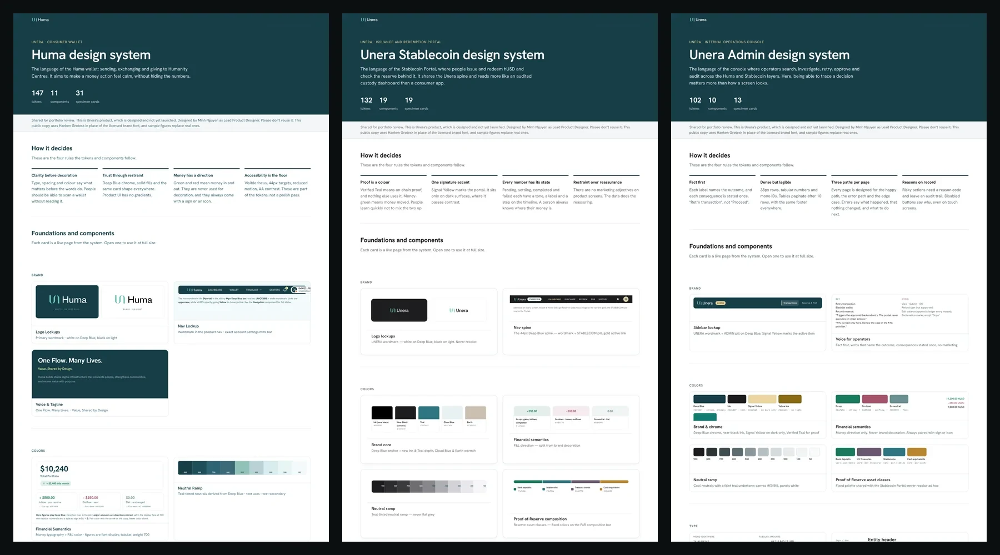
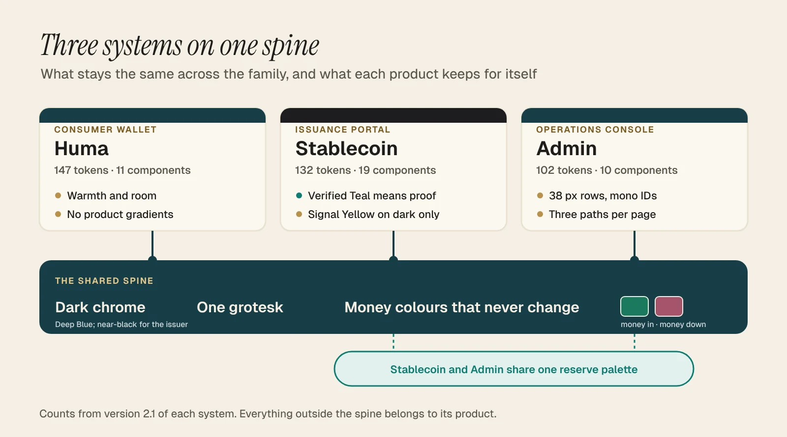
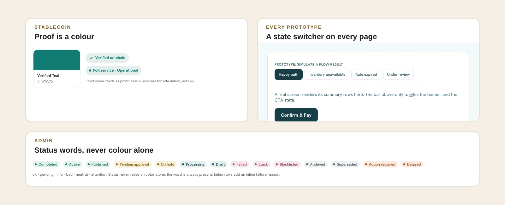

Unera · Dec 2025 – Oct 2026 · 4 min read
Three products, three design systems, one small spine, so money means the same thing to a customer and to the operator checking it.
Why this case is here: Systems thinking at lead level: a small shared spine, built in code the client’s engineers build on, and client feedback turned into system changes.
Three systems and 40 components on one spine, built in code. The client’s engineers build on that code, and the products scored 81, 83.5 and 81 on SUS in testing.
In-flight products · design complete, with engineering
- Problem. Unera has three products for three audiences: a consumer wallet, a stablecoin issuance portal and an internal operations console. Each needed its own system, but money had to mean the same thing in all three.
- What I did. Built three design systems on one small shared spine, straight in code and before the product screens. I wrote the rules into the tokens and turned client feedback into system changes.
- Result. The client's two front-end engineers build the products on the code I handed over. In prototype tests with 6, 5 and 5 people, the three products scored 81, 83.5 and 81 on the System Usability Scale. None has launched yet.


The story in 6 chapters · 4 min read
- UI/UX designer, promoted to Lead Product Designer (contract); led a part-time junior designer
- Product owner, QA and spec owner, 2 back-end and 2 front-end engineers, 1 part-time junior designer
- Dec 2025 – Oct 2026
- In-flight products · design complete, with engineering
- Design systems on one spine3Record
- SUS of the three products built on them81 · 83.5 · 81Tested
- Change notes from client feedback, Huma alone17Record
01 / 06 · The spine
A wallet, an issuer and a console need different systems, and the same money colours.

A Huma user sends, swaps and gives to community centres. A Stablecoin Portal user buys and redeems hUSD, and checks the reserve behind it. An operator in the Admin console searches, retries and approves all day. One system would have been too soft for the console or too cold for the wallet. Three unrelated ones would have let the operator and the customer describe the same transaction differently on a support call.
So I kept a small shared spine and let everything else vary:
- Dark chrome and one grotesk in all three, so it is always one company. The Stablecoin Portal goes near-black for a colder, more institutional feel.
- Money colours that never change. Money-in green and money-down red are the same in all three, and never decorate.
- One reserve palette for the Stablecoin Portal and the Admin console, so a reserve chart reads the same to a customer and to the operator checking it.
Decision
One system or three
- Options
- One system with product themes, or three systems that share a spine
- We chose
- Three on a spine. The console needs 38 px rows and mono IDs, the wallet needs room. One component set would have meant overrides on every screen. The cost is three systems to maintain.
02 / 06 · The rules
Built straight in code and before the products, so the rules live in the tokens.

I built the systems straight in code, first with Cursor and later with Claude, and designed the product screens on top of them afterwards. That also decided where the rules live: in a token or a component, not in a slide.
- Huma: no product gradients. They stay in marketing, so a balance never looks like an advert.
- Stablecoin: proof is a colour. Verified Teal means proof, and nothing else uses it.
- Admin: three paths per page. No module went to engineering without its happy, error and edge states.
- Everywhere: a state switcher on every prototype page, so QA and the client could see error states without breaking anything.
Decision
Figma first or code first
- Options
- A Figma library and a hand-off to engineering, or the systems built straight in code
- We chose
- Code first. A Figma library for three systems, then a hand-off, was more than I could keep up with, and code gave the engineers something they could use as it was. The cost is that people review the system in a browser, not in a design file.
03 / 06 · The feedback
A workshop every two weeks, and each round logged as a change to the system.
- 17
- change notes in the Huma system alone
- RecordAugust to October
- 9–14 in · 6.1 in
- target devices set by the client’s product lead
- RecordBecame a responsive rule
- 23
- batches of mobile feedback, mostly about density
- RecordBecame a written mobile rule set
Every two weeks we held a feedback workshop with the client's team. In between, the product owner in Canada collected feedback from users and sent it in batches. I logged each round as a change note: what was asked, what changed, and what was left alone on purpose.
Two rounds changed the system, not just a screen. In late August the client's product lead set the target devices, 9 to 14 inch computers and tablets and phones from 6.1 inches, and that became a responsive rule. In September, 23 batches of mobile feedback were mostly about density, so the repeat issues became a written mobile rule set.
A part-time junior designer joined in June and drew the error and edge states for all three products. I reviewed them against the written rules, not my own taste.
The three systems, as a place
Three systems, three heights.
A wallet, an issuer portal and an operator console. Each tower is as tall as its token count.
One spine underneath.
Dark chrome, one grotesk, and two money colours that hold the same value in all three.
One reserve palette.
The issuer portal and the console chart the reserve in the same colours, so a customer and the operator checking them see the same thing. The blocks are an illustration, not data.
- Three systems, three heights. A wallet, an issuer portal and an operator console. Each tower is as tall as its token count.
- One spine underneath. Dark chrome, one grotesk, and two money colours that hold the same value in all three.
- One reserve palette. The issuer portal and the console chart the reserve in the same colours, so a customer and the operator checking them see the same thing. The blocks are an illustration, not data.
04 / 06
Results
The client's two front-end engineers build the products on the code I handed over, and they praised the code.
- 3 systems with 381 tokens and 40 components, each documented with specimen cards. Record.
- 17 change notes from client feedback in the Huma system alone, August to October. Record.
- 81, 83.5 and 81 System Usability Scale scores for Huma, Stablecoin and Admin. Tested, n=6, 5 and 5, on prototypes at the end of design.
Read these carefully. Users score products, not design systems, so the usability scores belong to the products. None is live yet, so I can't count how many shipped screens use the tokens. That's the number I'll measure at launch.
Review copies: Huma · Stablecoin · Admin.
05 / 06
How I led
- Kept the shared spine small. Three things are fixed, and everything else belongs to the product.
- Built the systems before the products, in code, so engineering could take them as they were.
- Turned feedback into system changes, one change note per round.
- Gave a junior designer a lane with written rules.
06 / 06
What I'd do differently
When the Stablecoin Portal's chrome went near-black, its token kept the old name, Deep Blue. Now anyone new to the system has to be told. Next time I'd rename a token the day its value changes.
The review copies use Hanken Grotesk in place of the licensed brand font, and sample figures in place of reserve, fee and portfolio numbers. Unera and Huma are named with the client's written approval.